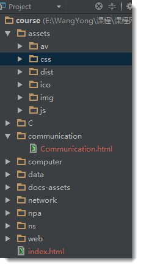

课堂教学
本课程采用自学+实验的方式，你应该了解和掌握如何利用HTML5来构建Web页面（网页），用CSS（bootstrap库）来美化Web页面（网页），以及利用JavaScript来进行简单的客户端交互等方面的基础知识。 通过该课程的学习，你应该能够对一个较复杂页面（如重庆交通大学首页）进行分析， 也能自己建设一个中等复杂程度的静态页面，同时为今后使用服务器端的动态网页技术构建网站打下基础,以致能进行现代Web应用的开发。
本课程采用自学+实验的方式，你应该了解和掌握如何利用HTML5来构建Web页面（网页），用CSS（bootstrap库）来美化Web页面（网页），以及利用JavaScript来进行简单的客户端交互等方面的基础知识。 通过该课程的学习，你应该能够对一个较复杂页面（如重庆交通大学首页）进行分析， 也能自己建设一个中等复杂程度的静态页面，同时为今后使用服务器端的动态网页技术构建网站打下基础,以致能进行现代Web应用的开发。
工欲善其事，必先利其器。
下载最新
Webstorm试用版
,
获得注册码
(或网络搜索注册码)后进行安装, 注册为正式版。
运行Webstorm，在
File->Setting菜单中，在其左面选项中选择
Appearance&Behavior->Appearance->Theme中选择其推荐的黑色
Darcula主题，并勾选
Override
default fonts by (not recommended) name，选择
微软雅黑作为界面字体。
仍在Setting界面中，选择左面
Editor->colors&fonts选项，另存
Darcula主题为其它任意名称，然后选择
colors&fonts下的
fonts菜单，选择
source code pro作为编辑界面字体字体。
Webstorm是以Project的方式进行网站的管理的，因此必须New Project。
然后右键点击项目名称建立所需要的文件及目录即可。常见网站目录结构如下：
推荐使用VS Code，微软推出的开源文本编辑器，异常的强大，请官网下载（ VS Code 最新版）安装。
运行该软件后，点击软件界面左侧第五个图标即可进行插件安装。推荐安装以下插件：Auto Close Tag、Auto Rename Tag、Code Runner、IntelliSense for CSS、Material Icon、Open HTML in Browser、Path Intelligence等。
开发网页，好的浏览器必不可少。推荐使用 Chrome 官网下载 或 Firefox 官网下载
一个网页就好像一幢房子，HTML结构就是钢筋混泥土的墙，一幢房子如果没有钢筋混泥土的墙那就是一堆废砖头，也就称不上是房子了。 CSS是装饰材料，是油漆，是用来装饰房子的。CSS如果没有HTML结构那也就什么都不是了，没有了实际使用价值。 而JavaScript就是房屋的开关，用来进行互动，产生动态效果。下图说明了这种关系。

HTML是超文本标记语言（HyperText Markup Language）的缩写，是为“网页创建和其它可在网页浏览器中看到的信息”设计的一种标记语言。
通常我们需要掌握的标记/标签不多，如常见的
body、head、title、p、img、a、div、span、ol、table等。请注意如
font、big、center等标签是不推荐使用的。
也可访问 菜鸟教程开始学习。
最新的 HTML5 规范摒弃了一些不合适的标签，同时引入了一些有效率、表达明确的标签如：
header、footer、section、article、aside、nav等。相关内容请查看网络资料。
在 code 中输入或复制如下 HTML 代码，我们稍作探究并在无 CSS 的情况下看看效果，并逐渐掌握
Chrome开发者工具的使用。
<!DOCTYPE html>
<html>
<head>
<meta charset="utf-8">
<title>HTML5</title>
<link rel="stylesheet" href="./css/html5.css">
</head>
<body>
<header>
<h1>头部</h1>
<h2>子标题</h2>
<h4>震撼HTML5</h4>
</header>
<div id="containter">
<nav>
<h3>导航</h3>
<a href="http://www.google.com">Google</a>
<a href="http://www.baidu.com" target="_blank">百度</a>
<a href="http://www.dapenti.com" target="_blank">打喷嚏</a>
</nav>
<section>
<article>
<header>
<h1>文章头部</h1>
</header>
<ol>
<li>当一个人只为维持生计而思维的时候，他的思想就难以高尚。 ——卢梭</li>
<li>衣不如新，人不如旧</li>
<li>井蛙不可语天，夏虫不可语冰</li>
<li>有党性，没人性</li>
</ol>
<footer>
<h2>
文章底部
</h2>
</footer>
</article>
<article>
<header>
<h1>文章头部</h1>
</header>
<ol>
<li>不想解决人民提出的问题，老想解决提出问题的人民。</li>
<li>要不是美领馆按pm2.5标准向外公布空气检测结果，我们肯定还生活在“现在播报新闻，冬季来临，全国大部地区全天有大雾，空气质量良”的世界里。</li>
<li>某男问大师：“大师，我女朋友虽有优点，但缺点让我难以忍受，怎样才能让她只有优点没有缺点呢？”大师笑答：“方法很简单，不过若要我教你，你得先下山为我找一张只有正面没反面的纸回来。” 该男略一沉吟下山而去，很快又上山来，递给大师一张“人民日报” 。大师看后，从此遁入空门，不再过问世事。</li>
<li>人民对领导人情感的强烈程度，往往与领导人的牛逼程度无关，而是与人民的傻逼程度及国家的封闭程度成正比！</li>
</ol>
<footer>
<h2>
文章底部
</h2>
</footer>
</article>
</section>
<aside>
<h3>边条</h3>
<pre>
agony 痛苦 爱过你
pregnant 怀孕 扑来个男的
ambulance 救护车 俺不能死
ponderous 肥胖的 胖的要死
pest 害虫 拍死它
ambition 雄心 俺必胜
bale 灾祸 背噢
admire 羡慕 额的妈呀
</pre>
</aside>
<footer>
<h2>底部</h2>
</footer>
</div>
</body>
</html> CSS即层叠样式表（Cascading Style Sheets）。用于修饰Web页面。如上，没有用CSS样式表的HTML惨不忍睹，我们添加如下代码后后探究一下
body{
background-color: #cccccc;
font-family: "Microsoft Yahei","SimHei";
margin: 0 auto;
max-width: 900px;
border: solid #FFFFFF;
}
header{
background: #F47D31;
display: block;
color: #FFFFFF;
text-align: center;
}
header h2{
margin: 0;
}
h1{
font: 72px;
margin: 0;
}
h2{
font: 24px;
margin: 0;
text-align: center;
/*color: #F47D31;*/
}
h3{
font: 18px;
margin: 0;
text-align: center;
color: #F47D31;
}
h4{
color: #F47D31;
background-color: #FFFFFF;
-webkit-box-shadow:2px 2px 20px #888;
-webkit-transform:rotate(-45deg);
-moz-box-shadow: 2px 2px 20px #888;
-moz-transform:rotate(-45deg);
position: absolute;
padding: 0 150px;
top: 50px;
left: -120px;
text-align: center;
}
nav{
display: block;
width:25%;
float:left;
}
nav a:link, nav a:visited{
display:block;
color: #F47D31;
border-bottom: 3px solid #FFFFFF;
padding: 10px;
text-decoration: none;
font-weight: bold;
margin: 5px;
}
nav a:hover{
color: white;
background-color: #F47D31;
}
nav h3{
margin: 15px;
color: white;
}
#container{
background-color: #888888;
}
section{
display: block;
width: 50%;
float:left;
}
article{
background: #eee;
display: block;
margin: 10px;
padding: 10px;
/*
-webkit-border-radius: 10px;
-moz-border-radius: 10px;
*/
border-radius: 10px;
/*-webkit-box-shadow:2px 2px 20px #888;*/
/*-webkit-transform:rotate(-10deg);*/
/*-moz-box-shadow:2px 2px 20px #888;*/
/*-moz-transform:rotate(-10deg);*/
transform:rotate(-10deg);
box-shadow: 2px 2px 20px #888;
}
article header{
border-radius: 10px;
padding: 5px;
}
article footer{
border-radius: 10px;
padding: 5px;
}
article h1{
font: 18px;
}
aside {
display: block;
width: 25%;
float: left;
}
aside h3{
margin: 15px;
color: white;
}
aside p{
margin: 15px;
color: white;
font-weight: bold;
font-style: italic;
}
footer{
clear:both;
display: block;
background: #F47D31;
color: #FFFFFF;
text-align: center;
padding: 15px;
}
footer h2{
font: 14px;
color: white;
}你看到的效果应如下所示
请跟随
HTML 5 and CSS 3: The Techniques You’ll Soon Be Using
的指南构建另一个应用HTML5技术的网站，效果如下:

简洁、直观、强悍的前端CSS开发框架，让web开发更迅速、简单。漂亮的Web页面不仅要求掌握CSS，同时还需要有足够的美感，对我等没有艺术细胞的开发者而言，2011年8月20日Bootstrap的出现以及开源就迎来了春天！
如果你以为上面的两个页面还可以的话，请移步
翁天信
看看效果。 更多的案例请看
Bootstrap优秀网站Show
我们如何能做到？请移步
Bootstrap中文网
或
Bootstrap校内镜像学习。该网站紧跟英文文档，提供最新信息。
Bootstrap3.3.7下载。BootStrap可以单独学习, 但推荐以下面的MDB的教程进行学习
Material Design是谷歌于2014年推出用于媲美苹果的视觉设计规范。请访问其官网了解。
Bootstrap也使用了MD的规范，构建了许多靓丽的组件，其中，以MDBootstrap为最佳
请下载
MDB-Free-4.5.11种子项目(扩展为Pro版：CSS文件、
JS文件,
请注意更改index.html文件中的字体文件为新的URL:https://use.fontawesome.com/releases/v5.8.2/css/all.css)，然后访问
MDB官网或访问
MDB校内镜像进行学习，并使用其教程
（Tutorial1,
Tutorial2）进行网站建设！
基础的JavaScript学习请参见
W3school-领先的Web技术教程或
W3C菜鸟教程（每个人都有菜的时候） ，或者直接下载其
chm格式学习文档，更进一步的学习请下载
JavaScript高级程序设计、
JavaScript权威指南(第6版)(中文版)以及
JavaScript语言精粹_修订版这3本书，网上其它的这方面书都有滥竽充数的嫌疑。
运行JavaScript有多种方式，可以直接在浏览器的控制台编写运行；也可以编写一个独立的js文件，然后在Html文件中引入，（这两种方法由浏览器解释执行，是以前唯一的方式）。也可以用编辑软件如Webstrom或VSCode编写独立的js文件，由安装好的Node.js解释执行运行（ node-v10.11.0-64位下载）。
因为JavaScript是我们前后端编程的基础，所以下面对JavaScript进行概要介绍
大小写敏感
标识符
getNameById
注释
语句
关键字/保留字
变量
坑！），所谓松散类型就是可以用来保存任何类型（如：
String、Number、Boolean以及Object等）的数据。换句话说，每个变量仅仅是一个用于保存值的占位符而已。
var 操作符（坑！），后跟变量名（即一个标识符），如下所示：
var message; 这行代码定义了一个名为
message 的变量，该变量可以用来保存任何值。下示代码合法但不推荐：
var message = 'Hi, JavaScript';
console.log(message);
message = 100;
console.log(message);var 操作符定义的变量将成为定义该变量的作用域中的局部变量。也就是说，如果在函数中使用
var 定义一个变量，那么这个变量在函数退出后就会被销毁，例如：
function test(){
var message = "hi"; // 局部变量，去掉var即为全局变量
}
test();
alert(message); // 错误！var 操作符可以定义全局变量，但这也不是我们推荐的做法。因为在局部作用域中定义的全局变量很难维护。那么正确的做法是什么？
一元操作符
++ --
布尔操作符
&& || ！
&&和||都属于
短路操作！
算术操作符
+ - * / %
var result = 5 + '5'; // 一个数值和一个字符串相加
console.log(result); // '55'
//============================================
var num1 = 5;
var num2 = 10;
var message = "The sum of 5 and 10 is " + num1 + num2;// (num1 + num2)，还可使用模板字符串``
console.log(message); // "The sum of 5 and 10 is 510"关系操作符
<>
<=>= == === != !==
var x = 5;
console.log(x == 5);
console.log(x == '5');
console.log(x === 5);
console.log(x === '5');条件（问号）操作符
? :
var max = (num1 > num2) ? num1 : num2;赋值操作符
= += -+ *= /= %=
if do-while while for for-in for-of break continue switch
{}，不要吝啬
for-of、forEach能简洁的遍历集合中的元素，如下代码：
var colors = ['red', 'green', 'blue', 'brown']; //colors是一个数组
//传统遍历（基本不用了）
for(var i=0;i<colors.length;i++){
console.log(colors[i]);
}
//for-in，专注下标
for(var c in colors){
console.log(colors[c]);
}
//for-of，专注元素
for(var c of colors){
console.log(c);
}
//高级遍历
colors.forEach(c => console.log(c));
var other = colors.map(c => c + 'X');//map不仅遍历，还返回另一个数组
console.log(other);函数（
function）对任何语言来说都是一个核心的概念。通过函数可以封装任意多条语句，而且可以在任何地方、任何时候调用执行。以下是一个函数示例：
function sayHi(name, message) {
console.log('Hello ' + name + ',' + message);
}
sayHi('Gridwang', '你好。');
ECMAScript 中的函数在定义时不必指定是否返回值。实际上，任何函数在任何时候都可以通过
return 语句后跟要返回的值来实现返回值。请看下面的例子：
function sum(num1, num2) {
return num1 + num2;
}
var result = sum(3, 2);
console.log(result);ECMAScript 函数不介意传递进来多少个参数，也不在乎传进来参数是什么数据类型。
也就是说，即便你定义的函数只接收两个参数，在调用这个函数时也未必一定要传递两个参数。可以传递一个、三个甚至不传递参数，而解析器永远不会有什么怨言（坑！）。
之所以会这样，原因是 ECMAScript 中的参数在内部是用一个数组来表示的。函数接收到的始终都是这个数组，而不关心数组中包含哪些参数（如果有参数的话）。如果这个数组中不包含任何元素，无所谓；如果包含多个元素，也没有问题。
如果在 ECMAScript中定义了两个名字相同的函数，则该名字只属于后定义的函数。请看下面的例子：
function addSomeNumber(num){
return num + 100;
}
function addSomeNumber(num) {
return num + 200;
}
console.log(addSomeNumber(100)); //300 对象
Object 是ECMAScript 中使用最多的一个类型。我们常将数据和方法封装在对象中。
创建对象有如下两种方式，我们常用第二种。
//方式一new
var person = new Object();//生成空对象
person.name = 'Elon Musk';//设置对象的属性
person.age = 46;
person.job = 'SpaceX Rocket';
person.sayName = function(){ //设置对象的方法/函数，注意此处
console.log(this.name);
};
//方式二字面量
var person = {
name: 'Lary Page',
age: 47,
job: 'Software Engineer',
sayName: function(){ //注意此处
console.log(this.name);
}
};
console.log(person.job);
person.sayName();
虽然
Object
构造函数或对象字面量都可以用来创建单个对象，但这些方式有个明显的缺点：使用同一个接口创建很多对象，会产生大量的重复代码。为解决这个问题，人们开始使用工厂模式的一种变体。代码如下：
function createPerson(name, age, job){
var o = new Object();
o.name = name;
o.age = age;
o.job = job;
o.sayName = function(){
console.log(this.name);
};
return o;
}
var person1 = createPerson('Steve Jobs',56 , 'Inventor');
var person2 = createPerson('Linus Torvalds', 49, 'Software Engineer');
var person2 = createPerson('Julian Assange', 47, 'Ethical Hacker');除了
Object 之外，
Array 类型恐怕是 ECMAScript 中最常用的类型了。
ECMAScript 中的数组与其他多数语言中的数组有着相当大的区别。虽然 ECMAScript 数组与其他语言中的数组都是数据的有序列表，但与其他语言不同的是，ECMAScript 数组的每一项 可以保存任何类型的数据（不建议！）。
也就是说，可以用数组的第一个位置来保存字符串，用第二位置来保存数值，用第三个位置来保存对象，以此类推。而且，ECMAScript 数组的大小是可以动态调整的，即可以随着数据的添加自动增长以容纳新增数据。
创建数组有以下两种方法，我们常用第二种。
//方式一new
var colors = new Array('red', 'blue', 'green');
//方式二字面量
var colors = ['red', 'blue', 'green']; // 创建一个包含 3 个字符串的数组
console.log(colors[1]);
colors[3] = 'brown';
console.log(colors.length);
var names = []; // 创建一个空数组
var hyBird = [1, 2, 'haha', {firstName: 'Yong', lastName: 'Wang'}]; //不推荐！
console.log(hyBird[3].firstName);常用的数组方法如下：
元素联合
var colors = ['red', 'green', 'blue'];
console.log(colors.join(',')); //red,green,blue
console.log(colors.join('||')); //red||green||blue堆栈方法
栈是一种 LIFO（Last-In-First-Out，后进先出）的数据结构，也就是最新添加的项最早被移除。而栈中项的插入（叫做推入）和移除（叫做弹出），只发生在一个位置——栈的顶部。
ECMAScript 为数组专门提供了
push() 和
pop() 方法，以便实现类似栈的行为。
var colors = []; // 创建一个数组
var count = colors.push('red', 'green'); // 末尾推入两项
console.log(count); //2
colors.push('black'); // 末尾推入另一项
console.log(colors); //3
var item = colors.pop(); // 末尾弹出最后一项
console.log(item); //'black'
console.log(colors); //2队列方法
栈数据结构的访问规则是 LIFO（后进先出），而队列数据结构的访问规则是 FIFO（First-In-First-Out，先进先出）。队列在列表的末端添加项，从列表的前端移除项。
由于
push() 是向数组末端添加项的方法，因此要模拟队列只需一个从数组前端取得项的方法。实现这一操作的数组方法就是
shift() ，它能够移除数组中的第一个项并返回该项，同时将数组长度减1。
var colors = new Array(); //创建一个数组
colors.push('red', 'green'); //推入两项
console.log(colors); //2
count = colors.push('black'); //推入另一项
console.log(colors); //3
var item = colors.shift(); // 前端弹出第一项
console.log(item); //'red'
console.log(colors);ECMAScript 还为数组提供了一个
unshift() 方法。它能在数组前端添加任意个项并返回新数组的长度。
var colors = new Array(); //创建一个数组
var count = colors.unshift('red', 'green'); // 推入两项
console.log(colors);
count = colors.unshift('black'); // 推入另一项
console.log(colors);
var item = colors.pop(); // 取得最后一项
console.log(item); //'green'
console.log(colors);总结：由上可知，
push、pop操作在数组末，而
unshift、shift操作在数组头；push、unshift压入而pop、shift弹出。
反转数组项
var values = [1, 2, 3, 4, 5];
values.reverse();
console.log(values); //5,4,3,2,1链接方法
var colors1 = ['red', 'green', 'blue'];
var colors2 = ['yellow', 'black'];
console.log(colors1.concat(colors2));
console.log(colors2.concat(colors1));
console.log(colors2.concat('brown'));
console.log(color2)//注意：concat返回一个新数组，原数组没改变分片方法
slice() ，它能够基于当前数组中的一或多个项创建一个新数组。
slice() 方法可以接受一或两个参数，即要返回项的起始和结束位置。
在只有一个参数的情况下，
slice() 方法返回从该参数指定位置开始到当前数组末尾的所有项。如果有两个参数，该方法返回起始和结束位置之间的项——但不包括结束位置的项。
注意，
slice() 方法不会影响原始数组。
var colors1 = ['red', 'green', 'blue', 'yellow', 'purple'];
var colors2 = colors1.slice(1);
var colors3 = colors1.slice(2, 4);
var colors4 = colors1.slice(2, 2);//结果是什么？
console.log(colors1);
console.log(colors2);
console.log(colors3);splice方法
splice() 方法恐怕要算是最强大的数组方法了，它可对数组如下3种操作。
注意，
splice() 方法直接更改原始数组。
删除：可以删除任意数量的项，只需指定 2 个参数：要删除的第一项的位置和要删除的项数。 例如，
splice(0,2) 会删除数组中的前两项。
插入：可以向指定位置插入任意数量的项，只需提供 3 个参数：起始位置、0（要删除的项数） 和要插入的项。如果要插入多个项，可以再传入第四、第五，以至任意多个项。例如，
splice(2,0,'red','green') 会从当前数组的位置 2 开始插入字符串 'red' 和 'green' 。
替换：可以向指定位置插入任意数量的项，且同时删除任意数量的项，只需指定 3 个参数：起 始位置、要删除的项数和要插入的任意数量的项。插入的项数不必与删除的项数相等。例如，
splice (2,1,'red','green') 会删除当前数组位置 2 的项，然后再从位置 2 开始插入字符串 'red' 和 'green' 。
var colors = ['red', 'green', 'blue'];
var removed = colors.splice(0,1); // 删除第一项
console.log(colors); // green,blue
console.log(removed); // red，返回的数组中只包含一项
removed = colors.splice(1, 0, 'yellow', 'orange'); // 从位置 1 开始插入两项
console.log(colors); // green,yellow,orange,blue
console.log(removed); // 返回的是一个空数组
removed = colors.splice(1, 1, 'red', 'purple'); // 插入两项，删除一项
console.log(colors); // green,red,purple,orange,blue
console.log(removed); // yellow，返回的数组中只包含一项链式语法已变得非常流行。实际上这是一种非常容易实现的模式。基本上，你只需要让每个函数返回
this代表包含该函数的对象，这样其他函数就可以立即被调用。看看下面的例子。
//链式语法
var bird = {//定义对象字面量
catapult: function() {
console.log( 'Yippeeeeee!' );
return this;//返回bird对象自身
},
destroy: function() {
console.log( "That'll teach you... you dirty pig!" );
return this;
}
};
bird.catapult().destroy();//destroy()后还可以再链接吗？闭包是什么?闭包是Closure，这是静态语言所不具有的一个新特性。但是闭包也不是什么复杂到不可理解的东西，简而言之，闭包就是：
函数的局部变量集合，只是这些局部变量在函数返回后会继续存在。
闭包就是就是函数的“堆栈”在函数返回后并不释放，我们也可以理解为这些函数堆栈并不在栈上分配而是在堆上分配
当在一个函数内定义另外一个函数就会产生闭包。如下代码：
function greeting(name) {
var text = 'Hello ' + name; // local variable
// 每次调用时，产生闭包，并返回内部函数对象给调用者
return function() { console.log(text); }//注意该函数无名称，称为匿名函数
}
var sayHello = greeting('Closure');//调用greeting()返回了什么？
sayHello(); // 注意此处的使用方法。通过闭包访问到了局部变量text上述代码的执行结果是：Hello Closure，因为sayHello指向了greeting函数对象，sayHello()则对其进行调用，greeting函数执行完毕后将返回greeting函数内定义的匿名函数对象，而该匿名函数仍然可以访问到了定义在greeting之内的局部变量text，注意此时我们已从greeting函数中退出了（但请留意，也只有该内部匿名函数能访问，其它任何代码都不能访问）。以下是另外一个例子：
var scope = 'global scope'; //全局变量
function checkScope(){
var scope = 'local scope'; //局部变量
function f(){
return scope;
}
return f;
}
checkScope()(); //注意此处的使用方法。返回值为local scope而非global scopeHTML5提供的Canvas（画布）API可用于很容易的创建2D/3D的图形、图像以及动画，当然这需要JavaScript的支持。
HTML5技术（注意非flash）的 2D植物大战僵尸和 3D俄罗斯方块游戏以及 Canvas时钟 。
我们以画一条线开始，代码如下：
<!DOCTYPE html>
<html>
<head>
<title>Canvas</title>
</head>
<body>
<canvas id="diagonal" style="border: 1px solid;" width="200px" height="200px">Opps!</canvas>
<script>
function drawDiagonal(){
//取得Canvas元素及其绘图上下文
var canvas=document.getElementById('diagonal');
var context = canvas.getContext('2d');
//用绝对坐标创建一条路径
context.beginPath();
context.moveTo(70, 140);
context.lineTo(140, 70);
//正式绘制
context.stroke();
}
window.addEventListener("load", drawDiagonal, true);
</script>
</body>
</html>效果如下：
下面再看一个较复杂的实例，效果如下，请阅读以下代码：
<!DOCTYPE html>
<html>
<head>
<meta charset="utf-8" />
<title>Canvas</title>
</head>
<body>
<canvas id="trails" style="border: 1px solid;" width="400px" height="400px">Opps!</canvas>
<script>
function createCanopyPath(context){
context.beginPath();
//树冠
context.moveTo(-25, -50);
context.lineTo(-10, -80);
context.lineTo(-20, -80);
context.lineTo(-5, -110);
context.lineTo(-15, -110);
//树顶点
context.lineTo(0, -140);
context.lineTo(15, -110);
context.lineTo(5, -110);
context.lineTo(20, -80);
context.lineTo(10, -80);
context.lineTo(25, -50);
//连接起点，闭合路径
context.closePath();
}
function drawTrails(){
var canvas = document.getElementById('trails');
var context = canvas.getContext('2d');
context.save();
context.translate(130, 250);
//调用，绘制树冠
createCanopyPath(context);
context.lineWidth = 4;
context.lineJoin = 'round';
context.strokeStyle = '#663300';
context.stroke();
context.fillStyle = '#339900';
context.fill();
context.fillStyle = '#663300';
context.fillRect(-5, -50, 10, 50);
context.restore();
//绘制小路
context.save();
context.translate(-10, 350);
context.beginPath();
context.moveTo(0, 0);
context.quadraticCurveTo(170,-50,260,-190);
context.quadraticCurveTo(310,-250,410,-250);
context.strokeStyle = '#663300';
context.lineWidth = 20;
context.stroke();
context.restore();
//文字
context.save();
context.font = "60px 'Microsoft Yahei'";
context.fillStyle = '#996600';
context.textAlign = 'center';
context.shadowColor = 'rgba(0,0,0,0.2)';
context.shadowOffsetX = 15;
context.shadowOffsetY = -10;
context.shadowBlur = 2;
context.fillText('快乐马拉松', 200, 60, 400);
context.restore();
}
window.addEventListener("load", drawTrails, true);
</script>
</body>
</html> Canvas（画布）是基于像素（栅格）的图形、图像以及动画，而SVG（Scalable Vector Graphics，可缩放矢量图形）是基于矢量的，两者的区别你放大图形即可知晓。
SVG实例一，效果和代码如下：
<!--设置SCG画布-->
<svg width=200 height=200>
<!--//g标签将以下图形组合为Group进行变换，以下分别是移动、旋转和缩放-->
<g transform="translate(60,0) rotate(30) scale(0.75)" id="shapeGroup1">
<!--//矩形：起点、宽高、边框、填充-->
<rect x=10 y=20 width=100 height=80 stroke=red fill=#ccc />
<circle cx=120 cy=80 r=40 stroke=#00f fill=none stroke-width=8 />
</g>
</svg>
SVG实例二，效果和代码如下：
<svg width="200" height="200">
<!--预定义，准备重复使用-->
<defs>
<g id="shapeGroup2">
<rect x="10" y="20" width="100" height="80" stroke="red" fill="#ccc" />
<circle cx="120" cy="80" r="40" stroke="#00f" fill="none" stroke-width="8" />
</g>
</defs>
<!--//重复使用-->
<use xlink:href="#shapeGroup2" transform="translate(60,0) scale(0.5)" />
<use xlink:href="#shapeGroup2" transform="translate(120,80) scale(0.4)" />
<use xlink:href="#shapeGroup2" transform="translate(20,60) scale(0.25)" />
</svg>
在Mozilla开发者网络中有大量示例请自行研究。 以下是一个以SVG等技术做出的 演示太阳系的漂亮示例，截图效果如下：
在Web页面中播放音视频的典型方式为：Flash、QuickTime、Windows Media插件，而HTML5是直接提供的 原生支持，无需这些插件，同时提供了通用、集成以及可JavaScript控制的API，开发人员尤其钟情。
下面是一个音频播放的效果及代码，请参阅教材了解更多：
<audio controls>
<source src="../assets/av/johann_sebastian_bach_air.mp3">
<source src="../assets/av/johann_sebastian_bach_air.ogg">
巴赫的舒缓音乐
</audio>下面是一个视频播放的效果及代码，请参阅教材了解更多：
<video controls autobuffer="true" width="100%" poster="../assets/img/poster.jpg">
<source src="../assets/av/oceans.mp4">
不支持的浏览器
</video>
以上原生的音视频播放如不能满足要求（如时间轴不能拖动，加入时刻点预览小窗口等）则可以用JavaScript对事件进行控制或使用大量的第三方工具（开源免费），以利于获得更多的控制
HTML5提供了全新的Geolocation API，当请求一个位置信息时， 如果用户同意，则浏览器通过支持HTML5地理定位功能的底层设备（如手机的 GPS等）得到该信息。位置信息一般由纬度、经度及其它数据构成，我们则可以此 构建位置感知类应用程序如地图查看、导航、租房指南等。
目前，大多数现代浏览器都支持该功能，但位置信息将触发隐私保护机制，也即需得到用户许可！
<!DOCTYPE html>
<html>
<head>
<meta charset="utf-8" />
<title>HTML5地理位置定位</title>
<!--引入Google或Sougo地图库-->
<!--<script src="https://maps.google.com/maps/api/js?sensor=false"></script>-->
<script src="https://api.go2map.com/maps/js/api_v2.5.1.js"></script>
<script type="text/javascript">
function loadMap(){
if(navigator.geolocation){
document.getElementById("status").innerHTML = "获取数据中...";
navigator.geolocation.getCurrentPosition(onSuccess, onError, {timeout: 5000});
}else{
document.getElementById("status").innerHTML = "浏览器不支持！";
}
}
// 执行成功的回调方法
function onSuccess(position){
var latitude = position.coords.latitude;
var longitude = position.coords.longitude;
// 生成经纬度组合数据
// var latlon=new google.maps.LatLng(latitude,longitude);
var latlon = new sogou.maps.LatLng(latitude, longitude);
// 选择元素
var mapholder=document.getElementById('mapholder');
//选项：中心、放大、地图类型、控制按钮
var myOptions={
center:latlon,
zoom:14,
// mapTypeId:google.maps.MapTypeId.ROADMAP,
mapTypeId:sogou.maps.MapTypeId.ROADMAP,
mapTypeControl:true
};
// 以选项在页面指定位置生成地图
// var map=new google.maps.Map(mapholder,myOptions);
var map = new sogou.maps.Map(mapholder, myOptions);
document.getElementById("status").innerHTML = "Sogou地图";
// 生成标注
// var marker=new google.maps.Marker({position:latlon,map:map, title:"您在这儿"});
var marker = new sogou.maps.Marker({position:latlon, map:map, title:"您在这儿"});
//创建标注窗口
// var infowindow = new google.maps.InfoWindow({
// content:"您在这里<br/>纬度："+ latitude + "<br/>经度：" + longitude
// });
var infoWindow = new sogou.maps.InfoWindow({
content:"您在这里<br/>纬度："+ latitude + "<br/>经度：" + longitude
});
//显示标注窗口
infoWindow.open(map,marker);
}
// 失败时的回调方法
function onError(error){
var status = document.getElementById("status");
switch(error.code){
case error.PERMISSION_DENIED:
status.innerHTML = "用户不允许！"; break;
case error.POSITION_UNAVAILABLE:
status.innerHTML = "地理信息数据不可用！使用我家的固定坐标数据。";
display();
break;
case error.TIMEOUT:
status.innerHTML = "获取地理信息数据超时！使用我家的固定坐标数据。";
display();
break;
default :
status.innerHTML = "发生未知错误！"; break;
}
}
function display(){
var myLatlng = new sogou.maps.LatLng(29.502782699999997,106.57155259999999);
var myOptions = {
zoom: 14,
center: myLatlng,
mapTypeId: sogou.maps.MapTypeId.ROADMAP
};
map = new sogou.maps.Map(document.getElementById("mapholder"), myOptions);
marker = new sogou.maps.Marker({position:myLatlng, map:map, title:"我的家"});
}
</script>
</head>
<body onload="loadMap()">
<h1>HTML5位置定位示例</h1>
<p id="status"></p>
<div id="mapholder" style="width:900px;height: 500px"></div>
</body>
</html>
TypeScript是JavaScript类型的超集（当前我们处于ES5），它可以编译成纯JavaScript。
TypeScript给JavaScript加上可选的类型系统，给JavaScript加上静态类型后，就能将调试从运行期提前到编码期，诸如类型检查、越界检查这样的功能才能真正发挥作用。 TypeScript的开发体验远远超过以往纯JavaScript的开发体验，无需运行程序即可修复潜在bug。
TypeScript支持未来的ES6甚至ES7。在TypeScript中，可以直接使用ES6的最新特性，在编译时它会自动编译到ES3或ES5。
TypeScript可以构建大型程序，并在任何浏览器、任何计算机和任何操作系统上运行，且是开源的。
安装好NodeJS后，以管理员身份运行终端，使用npm -g install ts-node typescript命令进行全局安装
如在VS Code中开发，请安装TSLint、TypeScript Hero、Bracket Pair Colorizer等插件
新建一个
以下我们就Typescript涉及前端框架Angular和相关特性的一些知识点进行介绍
不使用var，使用let或const申明变量，并加上类型说明，且作用域为块级即以{}为界
let lang: string = 'TypeScript';//如果省略类型说明，TS也可进行自动推断
lang = 1010;//error! 如果需要可以使用联合类型：let lang: number | string = 'TS';
let age: number = 89;
let age = 64;//error!
const pi: number = 3.14159;//pi以后不可改变，类似常量
pi = 3.14;//error!
将对象、数组中的元素拆分到指定变量中，以方便使用
//解构数组
let input = [89, 64, 2018, 10];
let [first, second] = input;//注意使用[]
console.log(first); // 89
console.log(second); // 64
let [one, ...others] = input; //剩余变量
console.log(...others);
//展开
let newArr = [89, ...others, 18];
console.log(newArr);
//解构对象
let o = {
a: "foo",
b: 12,
c: "bar"
};
let {a, b} = o;//注意使用{}，且变量名需与对象中道属性名一致
console.log(a, b);
使用完整函数类型定义
//命名函数，有完整的参数和返回类型。可以不用，TS将自动进行类型推断但推荐使用！
function add(x: number, y: number): number {
return x + y;
}
//匿名函数
let myAdd = function(x: number, y: number): number { return x + y; };
console.log(myAdd(1, '2'));//error
console.log(myAdd(1));//error
console.log(typeof myAdd(1, 2));//number
可选参数
//可选参数，必须放在必要参数后
function greeting(firstName: string, lastName?: string) {
if(lastName) {
return `Hello ${firstName} ${lastName}!`;
}
return `Hello ${firstName}!`;
}
console.log(greeting('QiGe'));
console.log(greeting('QiGe', 'Wang'));
console.log(greeting('QiGe', 'Wang', 'Yong'));//error!
默认参数
//默认参数，不必在必要参数后
function greeting(firstName: string, lastName = 'Wang') {
return `Hello ${firstName} ${lastName}!`;
}
console.log(greeting('QiGe'));
console.log(greeting('QiGe', 'HaHaHa'));
console.log(greeting('QiGe', 'HaHaHa', 'Yong'));//error!
剩余参数
必要参数，默认参数和可选参数有个共同点：它们表示某一个参数。 有时，你想同时操作多个参数，或者你并不知道会有多少参数传递进来， 在TypeScript里，你可以把所有参数收集到一个变量里
//剩余参数，会被当做个数不限的可选参数。可以一个都没有，也可以有任意个
function greeting(firstName: string, ...restName: string[]) {
return `Hello ${firstName} ${restName.join(' ')}!`;
}
console.log(greeting('Osama', 'bin', 'Muhammad', 'bin', 'Awad', 'bin', 'Laden'));
console.log(greeting('Laden'));
箭头函数
特点：简化函数定义、解决this问题（如需进一步了解可查看文档）
//无参数，函数体代码只有一行，则该行结果即为函数返回值
let greeting1 = () => `Hello TS!`;
console.log(greeting1());
//一个参数，函数体代码只有一行，则该行结果即为函数返回值
let greeting2 = (name: string) => `Hello ${name}`;
console.log(greeting2('QiGe'));
//两个及以上的参数，函数体代码只有一行，则该行结果即为函数返回值
let add1 = (n1: number, n2: number) => n1 + n2;
console.log(add1(1, 2));
//两个及以上的参数，函数体代码多于一行,则必须用{}包裹，且显式给出return
let add2 = (n1: number, n2: number) => {
let sum = n1 + n2;
return sum;//改为sum++结果如何？
}
console.log(add2(1, 2));
类是属性（有些什么）和函数（能干什么）的集合，是生成对象（Object）或类实例的模板。（请注意，我们要用的Angular框架大量使用类）
类的定义和使用
//类的定义和使用
class MyInfo { //class是关键字，类名默认全部大写首字母
name: string; //属性
weather: string; //属性
constructor(name: string, weather: string){ //构造函数，一般用于初始化。如果没有，TS会自动生成一个，以备用new创建类实例时调用。
this.name = name;
this.weather = weather;
}
printInfo(): void { //其它函数，无返回值
console.log(`Hello, ${this.name}.`);
console.log(`Today is ${this.weather}.`);
}
}
let myData = new MyInfo('QiGe', 'raining'); //使用new关键字生成对象，即该类的实例
myData.printInfo();
类的属性和函数的访问权限
类中的属性和函数都有访问权限，默认为public即全局可访问，其次为protected即可在类的内部和其子类的内部可访问，最后为private，只能在该类内部可访问。
//访问权限
class MyInfo { //class是关键字，类名默认全部大写首字母
public name: string; //public属性，可省略
private _weather: string; //私有属性，习惯以_开头进行命名
constructor(name: string, weather: string){ //构造函数，一般用于初始化
this.name = name;
this._weather = weather;
}
printInfo(): void { //其它函数
this._test();
console.log(`Hello, ${this.name}.`);
console.log(`Today is ${this._weather}.`);
}
private _test(): void {
console.log('You can not call me outside!');
}
}
let myData = new MyInfo('QiGe', 'raining'); //使用new关键字生成对象
console.log(myData._weather); //error!
myData._test(); //error
myData.printInfo();
存取器-getter、setter
当在类外部时，建议设置getter和setter操作其private属性，即使public属性也如此。
//getter和setter
class MyInfo { //class是关键字，类名默认全部大写首字母
private readonly _name: string; //私有属性，外部不可访问。readonly使其只能在初始化时赋值，以后不可更改。
private _weather: string; //私有属性，习惯以_开头进行命名
constructor(name: string, weather: string){ //构造函数，一般用于初始化
this._name = name;
this._weather = weather;
}
get name(): string {
return this._name;
}
set name(value: string) { //error！ _name有readonly属性
this._name = value;
}
get weather(): string {
return this._weather;
}
set weather(value: string) {
this._weather = value;
}
}
let myData = new MyInfo('QiGe', 'raining'); //使用new关键字生成对象
console.log(myData.name, myData.weather);
myData.weather = 'sunny'; //OK
myData.name = 'Wang'; //error!
console.log(myData);
静态属性
类中的属性或函数有static修饰，则可直接使用而不需要实例化
//静态属性，内建或自定义，无需new即可使用
console.log(Math.round(89.64)); //90
console.log(Math.pow(2, 8)); //256
class MyStaticClass {
static place = 'Earth';
static printInfo() {
console.log('We have only one Earth!');
}
}
console.log(MyStaticClass.place);
MyStaticClass.printInfo();
继承
可以通过extends关键字继承其它类，从而成为其子类
class Animal {
// 当构造函数传入的参数加上了“访问权限控制符”，则同时会声明同名类属性，并赋值
constructor(public name: string) { }
protected log(message: string) {
console.log(message);
}
move(distanceInMeters: number = 0) {
this.log(`${this.name} moved ${distanceInMeters}m.`);//请注意name来自何处
this.log('==============');
}
}
class Horse extends Animal {
constructor(name: string) {
super(name); // 通过super调用父类构造器
}
run(distanceInMeters = 50) { //自己独有的函数
this.log("Clop, clop...");
super.move(distanceInMeters); // 通过super调用父类方法
}
}
class Eagle extends Animal {
constructor(name: string) { super(name); }
reborn() { //自己独有的函数
console.log('Reborn？ It is a joke, hahaha!');
}
}
let tom: Horse = new Horse("Tommy the Palomino");
tom.run(8964);
let sam: Eagle = new Eagle("Sammy the Hawk");
sam.move(1024);//sam的move函数来自何处？
sam.reborn();
对于大型的项目，我们需要使用模块进行管理。每个 .ts 文件就是一个模块，通过 export 来对外部模块暴露元素，通过 import 来引入模块。
在项目文件夹下新建目录modules和文件main.ts，并在modules下新建name.ts和weather.ts文件，如下：
export class Name { //用export对外部暴露该类
constructor(private first: string, private second: string) {}
get nameMessage() {
return `Hello ${this.first} ${this.second}`;
}
}
export class WeatherLocation { //用export对外部暴露该类
constructor(private weather: string, private city:string) {}
get weatherMessage() {
return `It is ${this.weather} in ${this.city}`;
}
}
//用import从外部模块文件导入，默认后缀.ts去掉
import { Name } from "./modules/name";
import { WeatherLocation } from "./modules/weather";
let name = new Name('Wang', 'Yong');
let loc = new WeatherLocation('raining', 'ChongQing');
console.log(name.nameMessage);
console.log(loc.weatherMessage); 
使用超动感HTML & TS开发现代Web应用！
Angular是一个由Google开发维护的开源前端开发框架和平台（其它两个流行的是React和Vue）。
框架提供了大量高效的结构或者良好的模式，我们根据框架提供的结构或者模式去书写代码，由框架帮助我们去执行相应的操作。
如果没完全明白以上的意思，那就看下面的例子。
--------------------------------
1. JS运行环境node和版本控器git安装
--------------------------------
下载安装即可，重复安装即可更新，node -v和git --version可查看node和git是否安装成功
注意:
A: 建议安装时不要改变默认安装路径
B: git安装完成后请运行 git config --global user.name "Your Name" 和 git config --global user.email "MY_NAME@example.com"配置用户信息
------------------
2. 包管理器yarn安装
------------------
node默认的包管理器为npm，我们推荐使用yarn作为包管理器
方法A：npm install -g yarn #注意使用管理员权限进行全局安装
方法B：下载yarn安装包
重新安装yarn即可更新，安装完成后，运行yarn -v查看yarn是否安装成功
------------
3. 包源配置
------------
默认包仓库在海外, 速度及稳定性受到GFW的影响(WTF GFW！), 改为使用淘宝的包源。
方法A: 使用包源管理yrm(推荐)
yarn global add yrm # 注意使用管理员权限进行全局安装. 注意: 如果安装成功后yrm不能运行, 则是路径问题, 请使用 yarn global bin 查看位置并添加到系统路径中(建议重启系统生效)
yrm ls # 列出可用的源
yrm test taobao # 测速
yrm use taobao # 使用淘宝源
方法B: 手动配置
yarn config set registry https://registry.npm.taobao.org --global # 注意使用管理员权限
yarn config set sass_binary_site https://npm.taobao.org/mirrors/node-sass --global #注意使用管理员权限
---------------------------------
4. Angular开发工具angular/cli安装
---------------------------------
我们使用angular/cli即Angular命令行工具进行开发
方法A：yarn global add @angular/cli #使用yarn安装，#注意使用管理员权限
方法B：npm install -g @angular/cli #使用npm安装，#注意使用管理员权限
方法C：npm install -g cnpm #使用cnpm安装，#注意使用管理员权限
cnpm install -g @angular/cli
重新安装即可更新，运行ng version查看angular/cli是否安装成功
---------------------
5. angular/cli配置
---------------------
配置angular/cli使用yarn作为包管理器，如果有问题随时可转换回npm或者cnpm
ng config cli.packageManager yarn --global #注意使用管理员权限
---------------------
6. angular/cli基本使用
---------------------
ng new PROJECT_NAME --skip-tests #在合适的位置新建Angular项目(取消生成测试文件)，且已经自动初始化了本地仓库
cd PROJECT_NAME #进入项目文件夹
ng serve -o #启动开发服务器并自动打开浏览器访问http://localhost:4200/，同时监听文件变化，并在文件更改时重新构建此应用并自动刷新页面
---------------------
7. angular/cli常用命令
---------------------
详情请参考https://github.com/angular/angular-cli
ng g c my-new-component #新建组件
ng g s my-new-service #新建服务
ng g m my-new-module #新建模块
---------------------
8. 推荐vs code插件
---------------------
在前面的HTML以及TS部分我们已经推荐了以下插件：Auto Close Tag、Auto Rename Tag、Code Runner、IntelliSense for CSS、Material Icon、Open HTML in Browser、Path Intelligence、TSLint、TypeScript Hero、Bracket Pair Colorizer、TabOut等，使用Angular再请安装Angular language service和Angular 8 Snippets等
---------------------
9. 后台服务器Deployd
---------------------
Deployd是一个基于NodeJs和MongoDB数据库的后台服务程序，请访问http://deployd.com/
A: 以管理员身份运行npm install -g deployd-cli 或 yarn global add deployd-cli进行安装
运行dpd -V查看是否安装成功。
B: 然后下载MongoDB进行安装并将“MongoDB安装路径/bin”添加到系统path中即可。
C: 在合适的位置运行如下命令，新建并运行后台服务
dpd create TourOfHero #新建后台服务
cd TourOfHero #进入目录
dpd -d #先自动启动MongoDB, 运行后自动在浏览器打开2403的控制台
D: 如果仍然提示启动mongoDB失败, 则请先独自运行MongoDB(mongod --dbpath=data),指定当前目录下的data目录为数据库文件目录 然后再执行 dpd --host 127.0.0.1 -d 命令, 明确指定MongoDB服务器的地址. (原因不明)
---------------------
10. github的使用
---------------------
github是流行和强大的版本控制和代码托管网站，请一定学习使用。
要在vscode中使用，先前往官网https://git-scm.com/downloads 下载git，安装即可。
在code中打开项目文件夹，如果没有初始化则会有初始化的按钮，点击进行初始化（表明现在项目由github进行版本控制，angular/cli生成的项目已经初始化了），否则先本地暂存和提交（commit）；
登录github，新建名为xxx项目仓库
然后在项目文件夹下使用如下命令进行将本地缓存与远程仓库进行关联，origin表明是项目的起始
git remote add origin https://github.com/wang1/xxx.git
然后可以使用push/pull/sync/tag/clone等命令，在vscode左下角有图标可用
git tag tagname可生成本地标签，使用git push origin tagname在远程仓库的项目中添加标签。git clone https://github.com/wang1/xxx tagname可clone对应的版本
git config --global credential.helper wincred命令可以缓存github账户和密码而不需要每次输入（注意是windows平台下）
---------------------
11. 课堂讲授项目
---------------------
为方便学习，我们课堂讲授的项目我都放在了github上，以授课时间（如20181108）作为tag标注，请按上面的方法自行clone学习
通信专业： https://github.com/wang1/TOH-Comm请参照 Angular教程或 校内镜像进行英雄之旅的学习，掌握基本但重要的Angular前端开发技术。
在上节的基础上，我们进行Tour Of Heroes的升级版开发。本版本仍以TOH为例，当模拟一个生产环境进行开发。
用户有许多的英雄需要展示，目前打算：
根据用户的需求，我们做出了以下分析：
Angular支持，后台由Node和MongoDB支持（拟采用合成框架
Deployd）；MDBootstrap保证；项目界面大致如此：
鉴于目前只展示英雄，我们给出如下的英雄数据模型（后期可考虑图片）：
------------------------------------------------------
#属性名称 数据类型 允许为空 说明
------------------------------------------------------
id string no 系统设定
no string no 编号
name string no 姓名
description string yes 简介
isTop boolean yes 是否顶级英雄
------------------------------------------------------
--------------
#前端项目初始化
--------------
ng new TOH-V2-MDB --skip-tests #新建Angular项目。在新建过程中请注意: 1. 自动添加路由；2. 更改样式表为scss（新的css语法，MDB使用，暂不用理会）
----------------------------------------------------------
#配置Angular项目使用MDB框架（请一定注意，以下步骤在项目目录下进行）
----------------------------------------------------------
Step 1：#本地项目（注意没有global参数）安装额外的库
yarn add chart.js@2.5.0 font-awesome hammerjs npm-registry-client
Step 2: #添加MDB模块, 自动修改配置文件，实际就是执行后面的Step A 和 B两个步骤
ng add angular-bootstrap-md
================================================================
注意：以下两个步骤已经由Step 3自动完成了，无需手动完成。以下列出是为明白其做了什么。
Step A：在app.module.ts文件导入MDBBootstrapModule模块文件，如下所示：
import { NgModule } from '@angular/core';
import { MDBBootstrapModule } from 'angular-bootstrap-md';
@NgModule({
imports: [
MDBBootstrapModule.forRoot()
]
});
Step B：在项目根目录下angular.json文件中添加如下配置:
"styles": [
"node_modules/font-awesome/scss/font-awesome.scss",
"node_modules/angular-bootstrap-md/scss/bootstrap/bootstrap.scss",
"node_modules/angular-bootstrap-md/scss/mdb-free.scss",
"src/styles.scss"
],
"scripts": [
"node_modules/chart.js/dist/Chart.js",
"node_modules/hammerjs/hammer.min.js"
],
==================================================================
Step 4：#至此，MDB配置完毕，测试是否成功运行
ng serve -o
--------------
#后台项目初始化
--------------
dpd create TOH-V2-Backend #生成后台项目
打开控制台（localhost:2403/dashboard），按以上数据模型新建heroes-v2表
为保持数据的一致性，我们在
app目录中新建
hero.ts文件如下：
export class Hero {
constructor(
public id: string,
public no: string,
public name: string,
public description?: string,
public isTop?: boolean
) {}
}
根据分析和经验，我们需提供一个HeroService类与后台服务器通信并提供/接收组件要求的数据，以此屏蔽细节，进行解耦。
该服务可提供所有英雄、指定id的英雄、顶级英雄，可更新、新建、删除英雄等。
我们使用
ng g s hero命令在项目根目录下新建
hero.service.ts文件
默认情况下，命令 ng generate service 会通过给 @Injectable
装饰器添加元数据的形式，为该服务把提供商注册到根注入器上。也即，该服务可在整个项目可用。
该服务需要使用
HttpClient模块，所以请先在
AppModule文件中的
@NgModule.imports数组中添加
HttpClientModule（模块文件位于
@angular/common/http路径）
参考代码如下：
import { Injectable } from '@angular/core';
import { HttpClient } from '@angular/common/http';
import { Observable } from 'rxjs';
import { Hero } from './hero';
@Injectable({
providedIn: 'root'
})
export class HeroService {
// 请留意修改为你自己的URL
private heroesUrl = 'http://10.1.230.73:2403/heroes-v2';
// 注入了HttpClient服务
constructor(private httpClient: HttpClient) { }
// 获取所有英雄
getHeroes(): Observable<Hero[]> {
return this.httpClient.get<Hero[]>(this.heroesUrl);
}
// 获取指定id的英雄
getHeroById(id: string): Observable<Hero> {
return this.httpClient.get<Hero>(`${this.heroesUrl}/${id}`);
}
// 获取所有的顶级英雄
getTopHeroes(): Observable<Hero[]> {
// 请参考Deployd的API文档
return this.httpClient.get<Hero[]>(`${this.heroesUrl}?isTop=true`);
}
// 添加一个英雄
addHero(hero: Hero): Observable<Hero> {
return this.httpClient.post<Hero>(this.heroesUrl, hero);
}
// 删除一个英雄
deleteHero(id: string): Observable<any> {
return this.httpClient.delete(`${this.heroesUrl}/${id}`);
}
// 更新一个英雄
updateHero(hero: Hero): Observable<Hero> {
return this.httpClient.put<Hero>(this.heroesUrl, hero);
}
}
一个Angular应用必须有一个根组件，该组件一般作为其它组件的容器，且提供导航。
该组件在新建项目时已经自动生成，参考代码如下：
import { Component } from '@angular/core';
@Component({
selector: 'app-root',
templateUrl: './app.component.html',
styleUrls: ['./app.component.scss']
})
export class AppComponent {
title = 'TOH-MD-英雄之旅';
}
<mdb-navbar SideClass="navbar fixed-top navbar-expand-lg navbar-dark bg-default scrolling-navbar" [containerInside]="false">
<logo>
<a class="logo navbar-brand" href="#">
<i class="fa fa-child"></i>
<strong>{{title}}</strong>
</a>
</logo>
<links>
<ul class="navbar-nav mr-auto">
<li class="nav-item waves-light" mdbRippleRadius>
<a class="nav-link" routerLink="/hero-list">所有英雄</a>
</li>
<li class="nav-item waves-light" mdbRippleRadius>
<a class="nav-link" routerLink="/hero-top">顶级英雄</a>
</li>
<li class="nav-item waves-light" mdbRippleRadius>
<a class="nav-link" routerLink="/hero-add">添加一个英雄？</a>
</li>
</ul>
<ul class="navbar-nav nav-flex-icons">
<li class="nav-item waves-light" mdbRippleRadius>
<a class="nav-link">
<i class="fa fa-facebook"></i>
</a>
</li>
<li class="nav-item waves-light" mdbRippleRadius>
<a class="nav-link">
<i class="fa fa-twitter"></i>
</a>
</li>
<li class="nav-item waves-light" mdbRippleRadius>
<a class="nav-link">
<i class="fa fa-github"></i>
</a>
</li>
</ul>
</links>
</mdb-navbar>
<main>
<div class="container">
<router-outlet></router-outlet>
</div>
</main>
除根组件外，我们拟构建list、top、detail及add四个组件，请用
ng g c components/heroList等命令自动生成。
注意： 为清晰起见，我们将这4个组件放在了components目录中
以列表方式显示所有英雄(ng g c components/heroList)，参考代码如下：
import { Component, OnInit } from '@angular/core';
import { Hero } from '../../hero';
import { HeroService } from '../../hero.service';
@Component({
selector: 'app-hero-list',
templateUrl: './hero-list.component.html',
styleUrls: ['./hero-list.component.scss']
})
export class HeroListComponent implements OnInit {
heroes: Hero[];
constructor(private heroService: HeroService) { }
ngOnInit() {
this.getAllHeroes();
}
getAllHeroes(): void {
this.heroService.getHeroes()
.subscribe(heroes => this.heroes = heroes);
}
delete(id: string): void {
this.heroService.deleteHero(id)
.subscribe(() => this.heroes = this.heroes.filter(h => h.id !== id));
}
}
<div class="row mt-5 pt-5 animated fadeInLeft" data-wow-delay="0.5s">
<table class="table table-hover">
<thead class="bg-default">
<tr class="text-white">
<th>#</th>
<th>姓 名</th>
<th>顶级英雄</th>
<th>删 除</th>
<th>查 看</th>
</tr>
</thead>
<tbody>
<tr *ngFor="let hero of heroes" >
<th scope="row">{{hero.no}}</th>
<td>{{hero.name}}</td>
<td>{{hero.isTop?'是':'否'}}</td>
<td>
<button type="button" class="btn btn-sm btn-danger my-0 waves-light" (click)="delete(hero.id)">
<i class="fa fa-trash"></i>
</button>
</td>
<td>
<a class="btn btn-sm btn-info my-0 waves-light" routerLink="/hero-detail/{{hero.id}}">
<i class="fa fa-eye"></i>
</a>
</td>
</tr>
</tbody>
</table>
</div>
以卡片方式显示顶级英雄(ng g c components/heroTop)，参考代码如下：
import { HeroService } from '../../hero.service';
import { Component, OnInit } from '@angular/core';
import { Hero } from '../../hero';
@Component({
selector: 'app-hero-top',
templateUrl: './hero-top.component.html',
styleUrls: ['./hero-top.component.scss']
})
export class HeroTopComponent implements OnInit {
topHeroes: Hero[];
constructor(private heroService: HeroService) { }
ngOnInit() {
this.getTopHeroes();
}
getTopHeroes(): void {
this.heroService.getTopHeroes()
.subscribe(heroes => this.topHeroes = heroes);
}
}
<div class="row mt-5 pt-5 animated fadeInRight" data-wow-delay="0.5s">
<div class="card col-5 mt-2 pt-2 mr-2 hoverable" *ngFor="let topHero of topHeroes">
<div class="card-header bg-default lighten-1 white-text text-center">
顶级英雄-{{topHero.no}}
</div>
<div class="card-body">
<h4 class="card-title">{{topHero.name}}</h4>
<p class="card-text text-truncate">{{topHero.description}}</p>
<div class="text-center">
<a class="btn btn-deep-orange waves-light" routerLink="/hero-detail/{{topHero.id}}" mdbRippleRadius>查看详情</a>
</div>
</div>
</div>
</div>
显示某个英雄的详情(ng g c components/heroDetail)，参考代码如下：
import { Component, OnInit } from '@angular/core';
import { ActivatedRoute } from '@angular/router';
import { HeroService } from '../../hero.service';
import { Hero } from '../../hero';
import { Location } from '@angular/common';
@Component({
selector: 'app-hero-detail',
templateUrl: './hero-detail.component.html',
styleUrls: ['./hero-detail.component.scss']
})
export class HeroDetailComponent implements OnInit {
hero: Hero;
constructor(private route: ActivatedRoute,
private heroService: HeroService,
private location: Location) { }
ngOnInit() {
this.getHero();
}
getHero(): void {
const id = this.route.snapshot.paramMap.get('id');
this.heroService.getHeroById(id)
.subscribe(hero => this.hero = hero);
}
save(): void {
this.heroService.updateHero(this.hero)
.subscribe(() => this.goBack());
}
goBack(): void {
this.location.back();
}
}
<div class="row mt-5 pt-5 animated zoomIn" data-wow-delay="0.5s">
<div class="col-3"></div>
<div class="card col-6 z-depth-2">
<div class="card-body">
<!--Header-->
<div class="text-center text-default">
<h3>英雄详情</h3>
</div>
<!--Body-->
<div class="md-form form-sm">
<i class="fa fa-sort-numeric-desc prefix text-default"></i>
<input mdbActive type="text" id="formNo" class="form-control text-center" [(ngModel)]="hero.no" placeholder="编号">
<label class="text-default" for="formNo">编号</label>
</div>
<div class="md-form form-sm">
<i class="fa fa-address-card prefix text-default"></i>
<input mdbActive type="text" id="formName" class="form-control text-center" [(ngModel)]="hero.name" placeholder="姓名">
<label class="text-default" for="formName">姓名</label>
</div>
<div class="md-form form-sm">
<i class="fa fa-pencil prefix text-default"></i>
<textarea mdbActive type="text" id="formdesc" class="md-textarea mb-0" [(ngModel)]="hero.description"></textarea>
<label class="text-default" for="formdesc">简介</label>
</div>
<div class="input-group md-form form-sm">
<i class="fa fa-diamond prefix text-default"></i>
<label class="text-default" for="checkbox1">顶级英雄？</label>
<input type="checkbox" id="checkbox1" [(ngModel)]="hero.isTop">
</div>
<hr>
<div class="text-center mt-1-half">
<button class="btn btn-deep-orange mb-2 waves-light" mdbRippleRadius (click)="save()">
保存
</button>
<button class="btn btn-deep-orange mb-2 waves-light" mdbRippleRadius (click)="goBack()">
返回
</button>
</div>
</div>
</div>
</div>
让用户新建一个英雄(ng g c components/heroAdd)，参考代码如下：
import { HeroService } from '../../hero.service';
import { Hero } from '../../hero';
import { Component, OnInit } from '@angular/core';
import { Location } from '@angular/common';
@Component({
selector: 'app-hero-add',
templateUrl: './hero-add.component.html',
styleUrls: ['./hero-add.component.scss']
})
export class HeroAddComponent implements OnInit {
constructor(private heroService: HeroService, private location: Location) {}
ngOnInit() {}
add(no: string, name: string, description: string, isTop: boolean): void {
if (!no || !name) { return; }
this.heroService.addHero({no, name, description, isTop} as Hero)
.subscribe();
}
goBack(): void {
this.location.back();
}
}
<div [config]="{ show: true }" mdbModal #addHeroModal="mdb-modal" class="modal fade" (onHidden)="goBack()" tabindex="-1" role="dialog">
<div class="modal-dialog cascading-modal" role="document">
<div class="modal-content">
<div class="modal-header bg-default darken-3 white-text">
<h4 class="title">
<i class="fa fa-user-plus"></i> 请填写英雄信息</h4>
<button type="button" class="close waves-effect waves-light" data-dismiss="modal" aria-label="Close" (click)="goBack()">
<span aria-hidden="true">×</span>
</button>
</div>
<div class="modal-body mb-0">
<form role="form">
<div class="md-form form-sm">
<i class="fa fa-sort-numeric-desc prefix text-deault"></i>
<input mdbActive type="text" id="formNo" class="form-control text-center" #no required>
<label class="text-default" for="formNo">编号</label>
</div>
<div class="md-form form-sm">
<i class="fa fa-address-card prefix text-default"></i>
<input mdbActive type="text" id="formName" class="form-control text-center" #name required>
<label class="text-default" for="formName">姓名</label>
</div>
<div class="md-form form-sm">
<i class="fa fa-pencil prefix text-default"></i>
<textarea mdbActive type="text" id="formdesc" class="md-textarea mb-0" #desc></textarea>
<label class="text-default" for="formdesc">简介</label>
</div>
<div class="md-form form-sm">
<i class="fa fa-diamond prefix text-default"></i>
<label for="checkbox1">顶级英雄？</label>
<input type="checkbox" id="checkbox1" #isTop>
</div>
<hr>
<div class="text-center mt-1-half">
<button type="submit" class="btn btn-deep-orange mb-2 waves-light" mdbRippleRadius (click)="add(no.value,name.value,desc.value,isTop.checked);addHeroModal.hide();no.value='';name.value='';desc.value='';isTop.checked=false">
添 加
<i class="fa fa-send ml-1"></i>
</button>
</div>
</form>
</div>
</div>
</div>
</div>
<!--Modal: Add Hero form-->
有了多个组件，我们需在组件视图之间切换即导航，利用Angular的导航模块可迅速的进行前端页面部分刷新。
在新建项目时我们已经自动生成了路由即导航模块. 如果没有,则可使用
ng g m app-routing --flat --module=app命令新建
app-routing.module.ts导航模块文件
参考代码如下：
import { HeroAddComponent } from './components/hero-add/hero-add.component';
import { HeroTopComponent } from './components/hero-top/hero-top.component';
import { HeroListComponent } from './components/hero-list/hero-list.component';
import { HeroDetailComponent } from './components/hero-detail/hero-detail.component';
import { RouterModule, Routes } from '@angular/router';
import { NgModule } from '@angular/core';
const routes: Routes = [
{ path: '', redirectTo: 'hero-top', pathMatch: 'full' },
{ path: 'hero-list', component: HeroListComponent },
{ path: 'hero-top', component: HeroTopComponent},
{ path: 'hero-detail/:id', component: HeroDetailComponent},
{ path: 'hero-add', component: HeroAddComponent}
];
@NgModule({
imports: [ RouterModule.forRoot(routes)],
exports: [ RouterModule ]
})
export class AppRoutingModule { }
Angular应用程序是以模块进行构建的。当前我们有一个根模块即
app.module.ts文件
任何组件、服务、自定义模块如路由模块以及第三方发模块如MDB、表单模块等都需要在根模块中导入或声明
目前该模块参考代码如下：
import { BrowserModule } from '@angular/platform-browser';
import { NgModule } from '@angular/core';
import { AppRoutingModule } from './app-routing.module';
import { AppComponent } from './app.component';
import { MDBBootstrapModule } from 'angular-bootstrap-md';
import { HttpClientModule } from '@angular/common/http';
import { HeroListComponent } from './components/hero-list/hero-list.component';
import { HeroTopComponent } from './components/hero-top/hero-top.component';
import { HeroDetailComponent } from './components/hero-detail/hero-detail.component';
import { HeroAddComponent } from './components/hero-add/hero-add.component';
import { FormsModule } from '@angular/forms';
@NgModule({
declarations: [
AppComponent,
HeroListComponent,
HeroTopComponent,
HeroDetailComponent,
HeroAddComponent
],
imports: [
BrowserModule,
AppRoutingModule,
MDBBootstrapModule.forRoot(),
HttpClientModule,
FormsModule
],
providers: [],
bootstrap: [AppComponent]
})
export class AppModule { }
现在运行程序试试！
程序基本满足需求, 但目前有以下问题:
产品部署:
使用ng build --prod命令进行优化并生成产品, 拷贝到任何Web服务器如Nginx即可.
index.html文件中的base标签!
本节我们将一步一步构建一个聊天室，该实例是一个综合例子，涉及AngularJS 、NodeJS、WebSocket、MondoDB等知识。本实例来自 isLand在GitHub的分享
使用Nestjs, Fastify, Graphql, MongoDB, Angular, Material等工具, 进行Angular官网的英雄之旅demo的前后端全栈开发